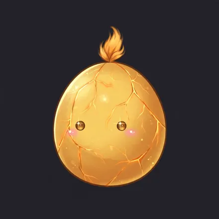
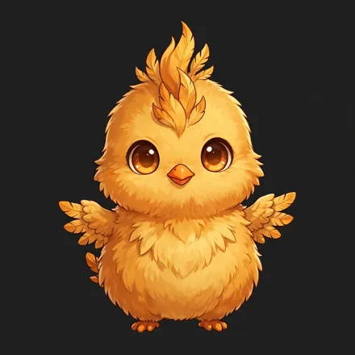
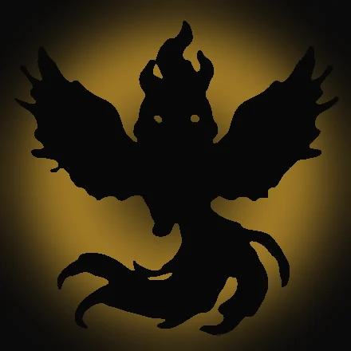
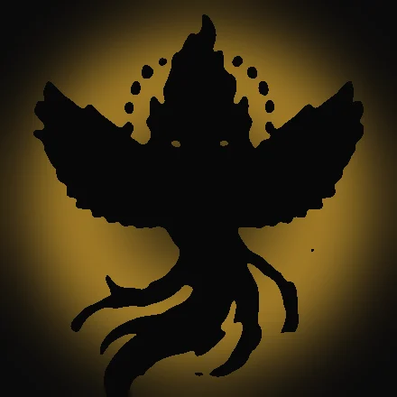
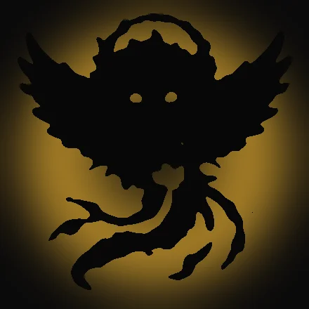
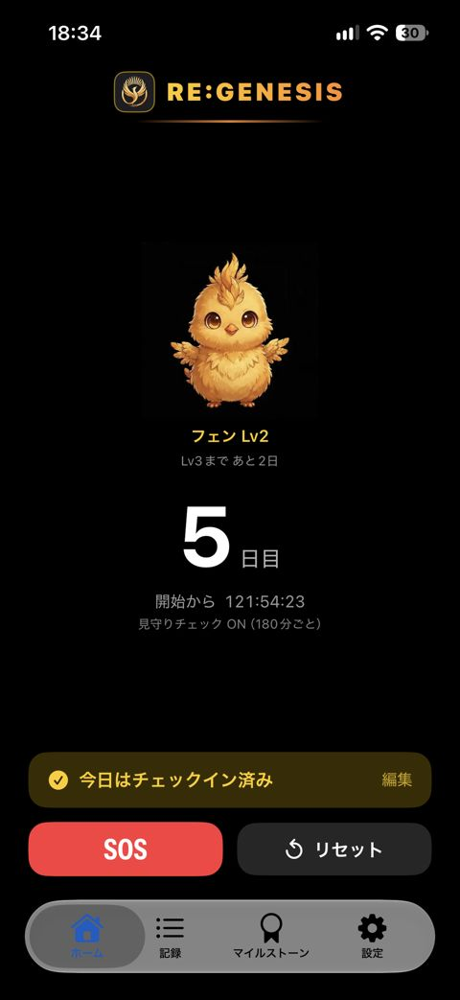
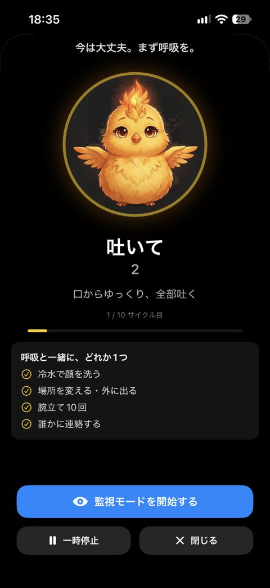
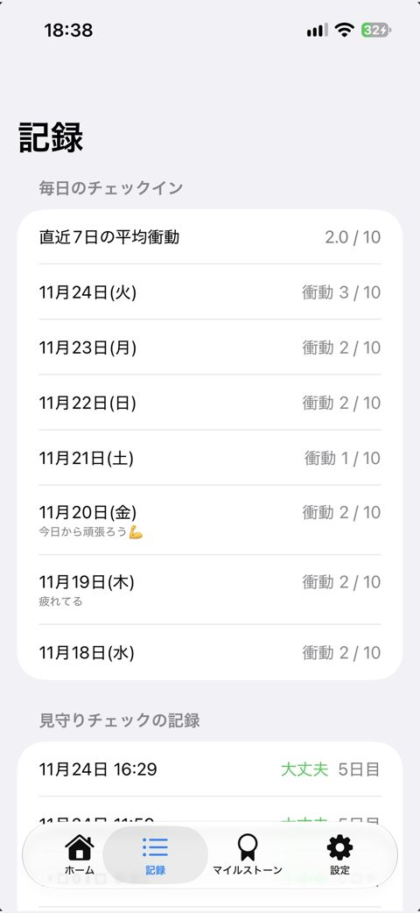
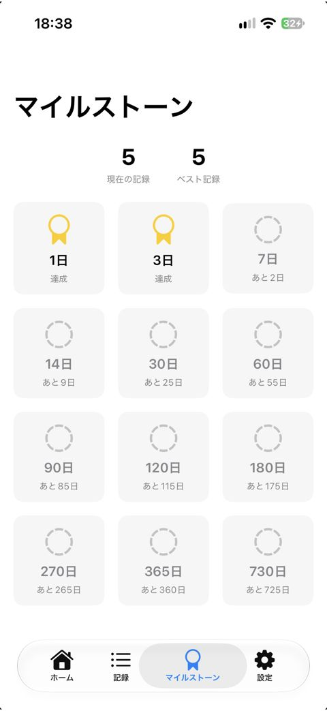

RE:GENESIS Phoenix
「やめる」は、終わりじゃない
新しい自分の、はじまり
「やめたい」を、ひとりで抱えないための習慣カウンター
金のフェニックス「フェン」と一緒に、今日を積み重ねていきます
「やめたい」と思えた時点で、あなたの中ではもう
新しい自分が目を覚ましています
だからこのアプリは、我慢した日数を数えません
数えるのは、生まれ変わっていく日々
フェンが卵から少しずつ育つように、あなたも一日ずつ理想の自分に近づいていく
その歩みを隣で見守り続けるアプリです
フェンは卵から始まり、継続の日数と毎日のチェックインで Lv1〜Lv12 まで育ちます。放置では育たず、チェックインが足りないと成長だけが止まりますが、ペナルティはありません。





Lv5以降の姿は、育ててからのお楽しみです。
開発者のサーバーなし、アカウント登録なしで、記録にアクセスできるのはあなただけです。
監視モード Pro は現在開発中。できあがり次第、アップデートでお知らせします。




お問い合わせ：fenworks.support@gmail.com
プライバシーポリシー（日英） / Privacy Policy
本アプリは記録と支援のための道具で、病気の治療や医療効果を約束するものではありません。困ったときは専門機関にご相談ください。
RE:GENESIS Phoenix — a fresh-start habit counter.
Quitting isn't losing something. It's becoming who you want to be. The moment you think "I want to quit," a new you has already begun to wake up.
This app doesn't count days of endurance. It counts days of becoming. Fen grows from an egg, one day at a time — and so do you.
No developer server, no account. Only you can access your records. Monitoring Mode Pro is in development and will be announced in a future update.